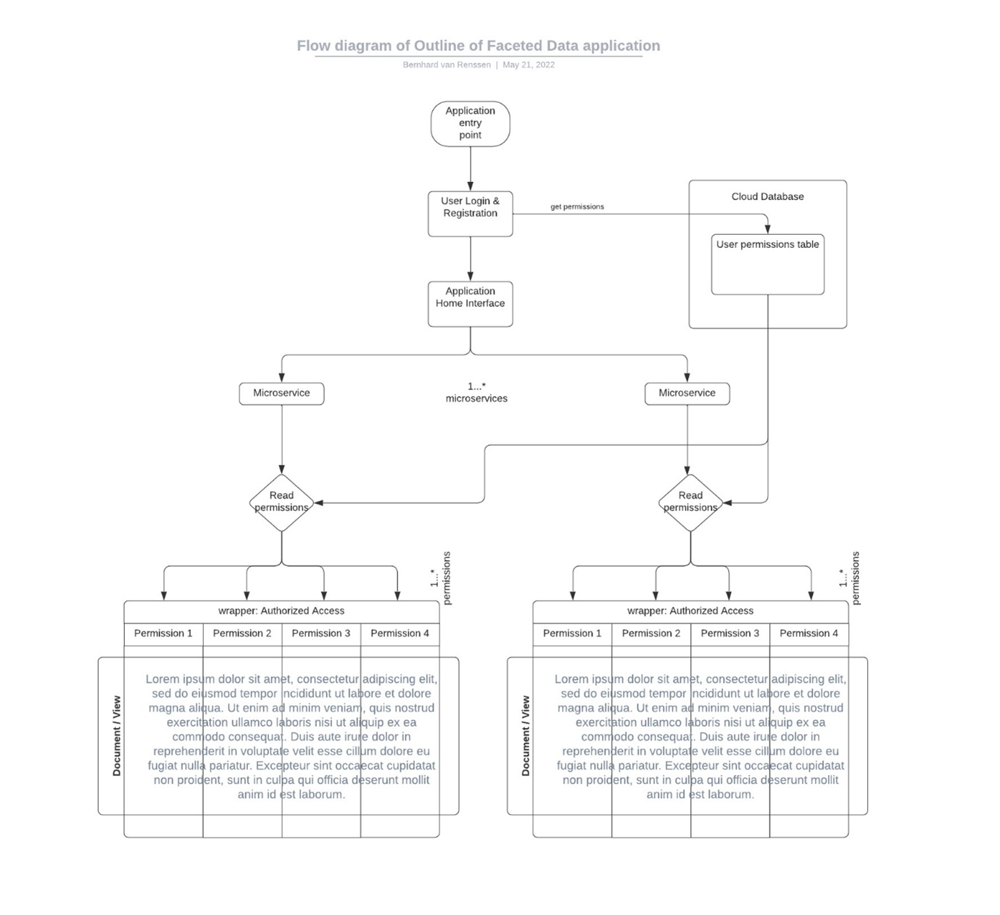

Read Schmitz et al (2016) article about faceted data
Do you think this is a good approach to protect systems from data leakage? What are the pros and cons?
Faceted data is a way to organise different users and their permissions to be able to view the same data or document, but each individual user with its permission will only be able to view/read/write parts of the document based on the permissions that it has. User A for example will be able to view and edit the first part of the document, User B will only be allowed to view the first section of this document, whereas User C will not be able to view the document at all (not be able to decrypt the document) due to their permissions.
Thinking about data in our current day and age, we usually need to access data on-the-spot, often on devices that have limited resource capabilities. This requires programmers to think of data and data access in different ways, and data faceting is a way to ensure that with these limited overhead resources, the right user would be able to access the same data, but limit/restrict its capabilities of viewing/editing parts of the data. For general access, it thus has its advantages, but at the same time it might make it easier for data leakages if this system is vulnerable to attacks, by simply altering the permissions of a user.
Create a basic outline design of how you would create such a system in Python.
